<!DOCTYPE html>
<html lang="zh">
<head>
<meta charset="UTF-8">
<meta name="viewport" content="width=device-width, initial-scale=1.0">
<title>介绍人物 · 第一节 词汇</title>
<link rel="stylesheet" href="../../assets/style.css">
<style>
.rw-thumb {
  display: block;
  width: min(100%, 320px);
  aspect-ratio: 8 / 5;
  object-fit: contain;
  margin: 0 auto 12px;
  border-radius: 12px;
}
</style>
</head>
<body>
<script src="../../assets/catalog.js"></script>
<script>
window.LESSON = {
  id:"renwu-practice-1", n:1, unit:"renwu-practice", category:"口语",
  unitTitle:"介绍人物", title:"词汇", subtitle:"Appearance Vocabulary",
  sections:[
    { type:"culture", title:"词语参考 · Word bank", sub:"先认读，再看图选词 · Learn first, then practise", facts:[
      {k:"身材", html:"<b>高大、矮小、健壮、强壮、胖、瘦、瘦小、文弱、虚弱</b><br><span style='color:#6b7686'>tall and big, short and small, fit, strong, plump, slim, small-framed, delicate, weak</span>"},
      {k:"脸和头发", html:"<b>圆脸、长脸、浓眉大眼、长发、短发、直发、卷发、白发</b><br><span style='color:#6b7686'>round face, long face, thick eyebrows and big eyes, long/short/straight/curly/white hair</span>"},
      {k:"其他", html:"<b>年轻、年老、戴眼镜、留胡子、笑容灿烂、风度翩翩</b><br><span style='color:#6b7686'>young, elderly, wears glasses, has a beard, radiant smile, elegant bearing</span>"}
    ]},
    { type:"reading", title:"示例 · Example", img:"img/zhuge-example.webp", paras:[
      "诸葛亮头戴纶巾，手拿羽扇，身材高大，风度翩翩。"
    ]},
    { type:"quiz", title:"看图选词（一） · Picture vocabulary 1", sub:"点选最合适的词语完成句子 · Tap the best answer", questions:[
      {ask:'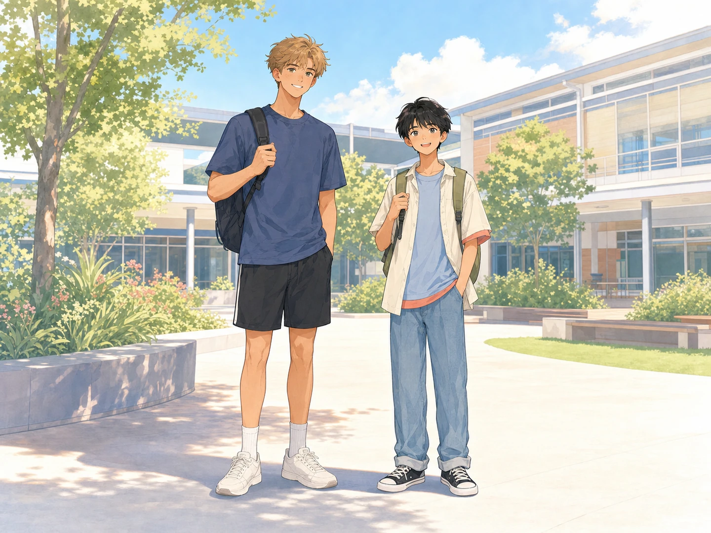<br>① 左边的学生个子很高，身材＿＿；右边的学生个子比较＿＿。', answer:0, options:["高大；矮小","瘦小；高大","虚弱；健壮"]},
      {ask:'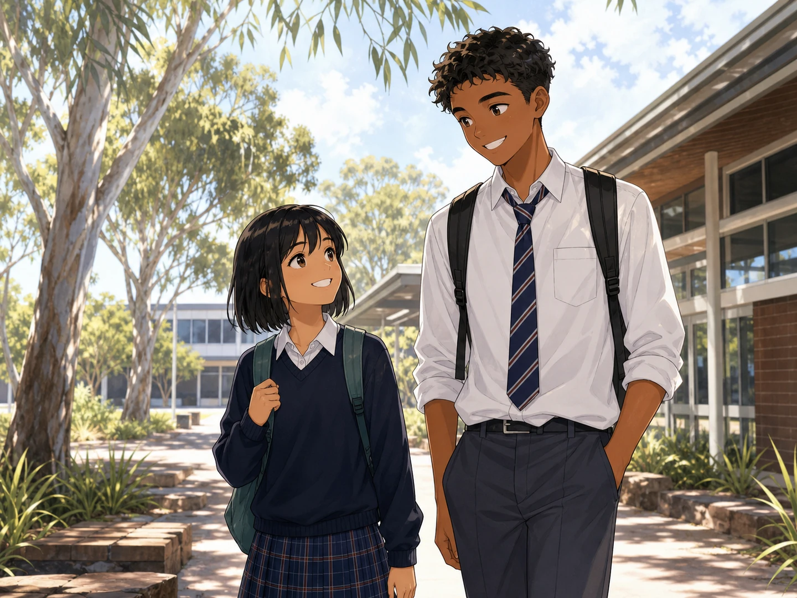<br>② 小明个子很高，小华个子比较＿＿。', answer:1, options:["健壮","矮小","文弱"]},
      {ask:'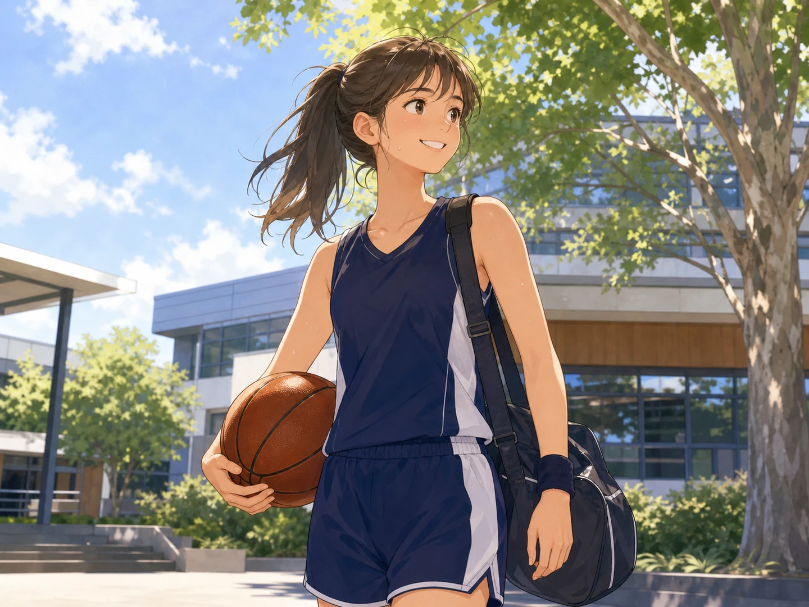<br>③ 她经常参加体育运动，所以身体很＿＿。', answer:2, options:["虚弱","瘦小","健壮"]},
      {ask:'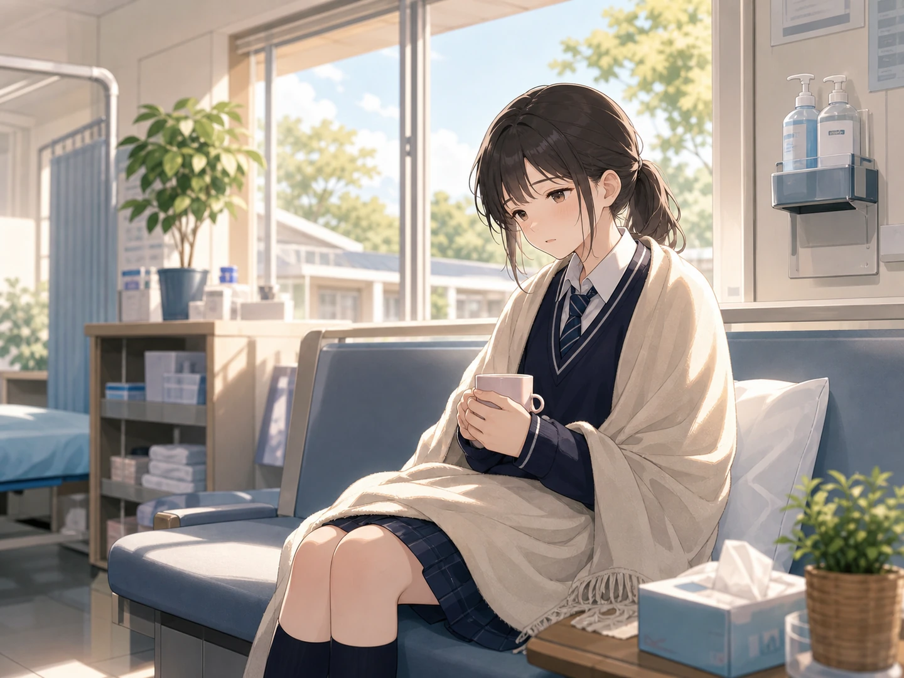<br>④ 她生病以后身体还有些＿＿，需要多休息。', answer:0, options:["虚弱","强壮","高大"]},
      {ask:'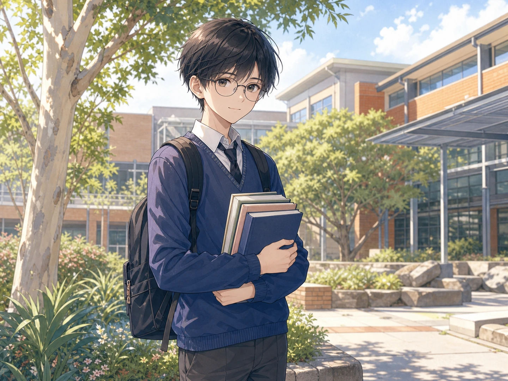<br>⑤ 他身材＿＿，看起来斯文而＿＿。', answer:1, options:["高大；健壮","瘦小；文弱","胖；强壮"]},
      {ask:'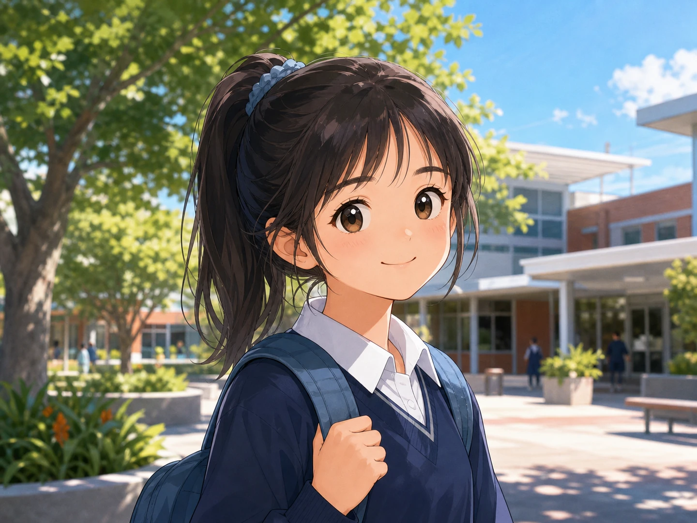<br>⑥ 她长着一张＿＿，而且＿＿。', answer:2, options:["长脸；戴眼镜","圆脸；留胡子","圆脸；浓眉大眼"]}
    ]},
    { type:"quiz", title:"看图选词（二） · Picture vocabulary 2", sub:"点选最合适的词语完成句子 · Tap the best answer", questions:[
      {ask:'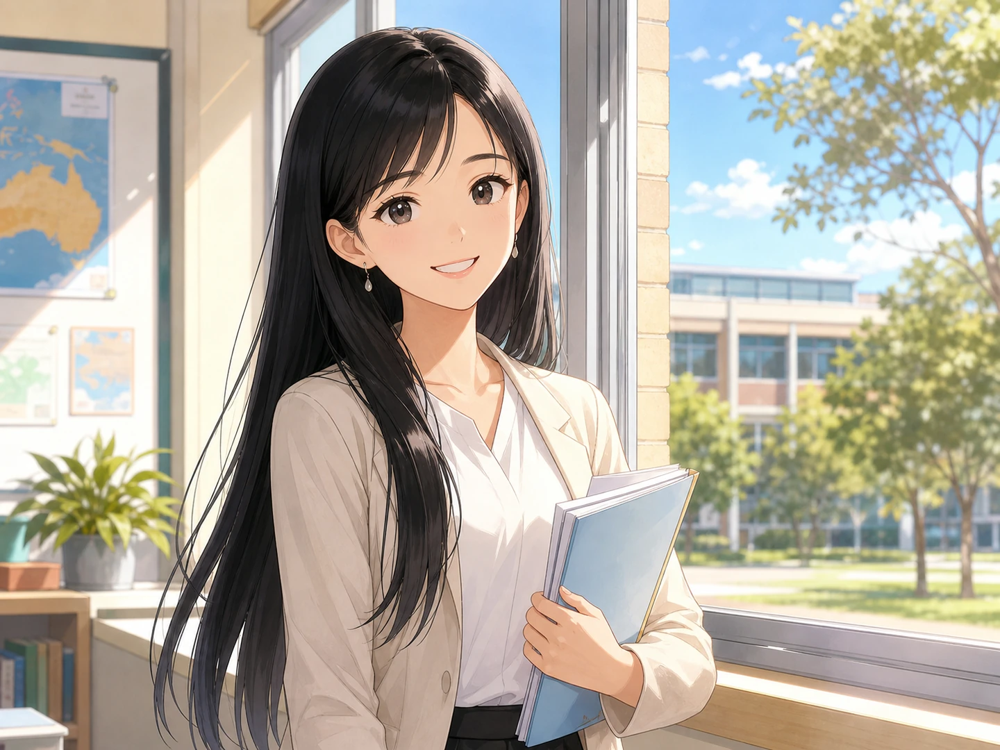<br>⑦ 她很＿＿，留着黑色的＿＿。', answer:0, options:["年轻；长发","年老；短发","虚弱；白发"]},
      {ask:'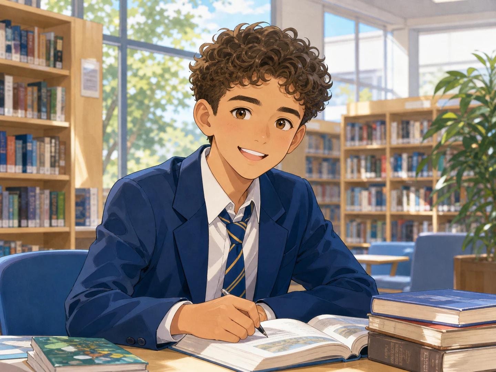<br>⑧ 他留着＿＿，头发还有一点儿＿＿。', answer:1, options:["长发；直","短发；卷","白发；长"]},
      {ask:'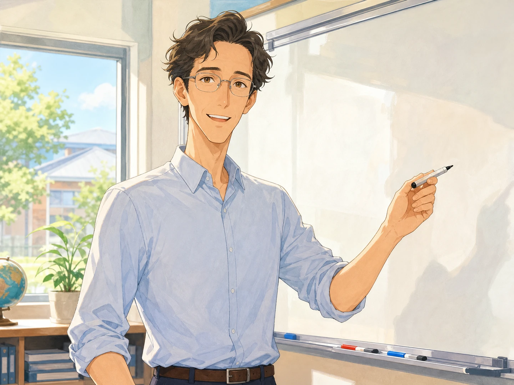<br>⑨ 这位老师长着一张＿＿，还＿＿。', answer:2, options:["圆脸；留胡子","圆脸；留长发","长脸；戴眼镜"]},
      {ask:'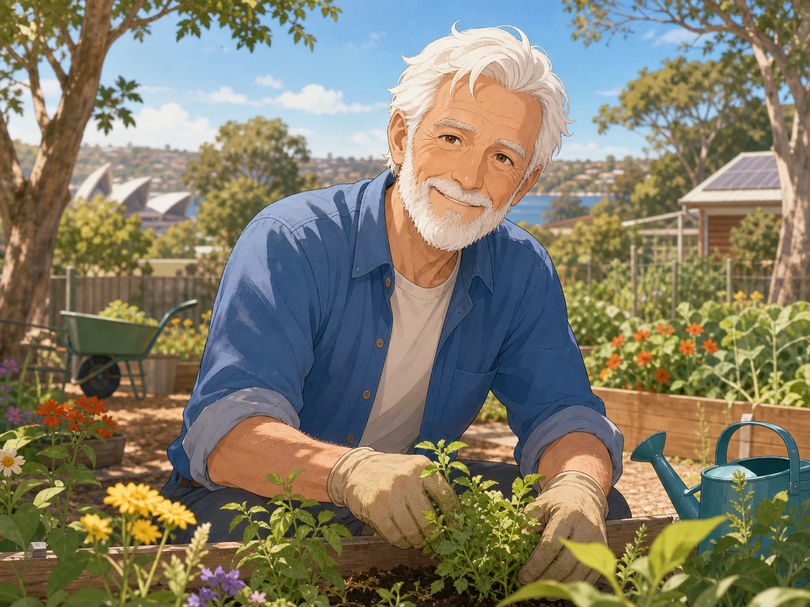<br>⑩ 这位老人已经很＿＿了。他满头＿＿，还＿＿。', answer:0, options:["年老；白发；留胡子","年轻；短发；戴眼镜","虚弱；卷发；留胡子"]},
      {ask:'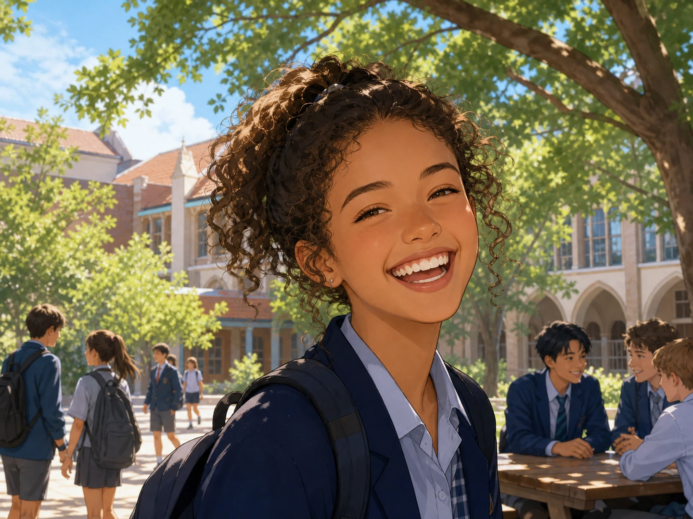<br>⑪ 这个年轻人面带微笑，＿＿，看起来很友好。', answer:1, options:["风度翩翩","笑容灿烂","文弱虚弱"]},
      {ask:'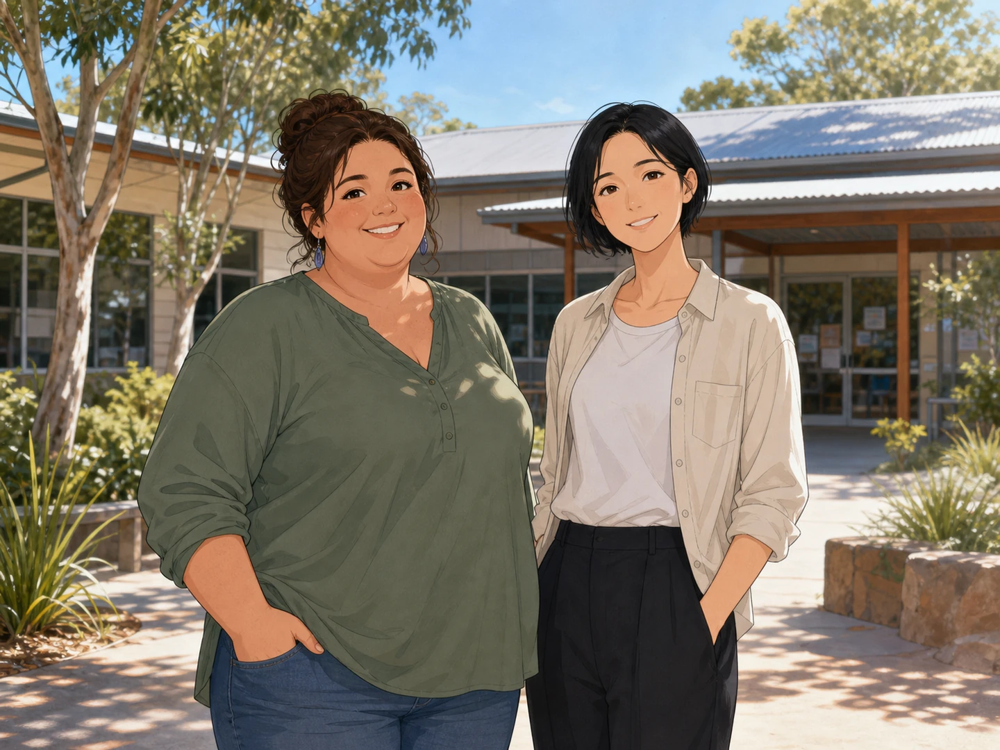<br>⑫ 左边的人比较＿＿，右边的人比较＿＿。', answer:2, options:["瘦；胖","高大；矮小","胖；瘦"]}
    ]},
    { type:"sectionnav", title:"继续练习 · Continue", items:[
      {title:"词汇", url:"1.html"},{title:"介绍孔子", url:"2.html"},{title:"介绍诸葛亮", url:"3.html"},{title:"介绍一个名人／熟悉的人", url:"4.html"}
    ]}
  ]
};
</script>
<script src="../../assets/lesson.js"></script>
</body>
</html>
